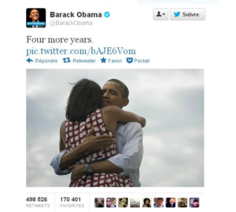

Booster sa popularité avec les réseaux sociaux et
accroître sa visibilité sur différentes plateformes est devenu accessible à tous.
Il suffit juste d’avoir un ordinateur, un mobile,
accès à internet et surtout…des tactiques de communication qui captent l’attention des communautés sur internet.
Hommes politiques, artistes, commerçants ou simples citoyens, ils ont bien su comment gagner en visibilité et atteindre
leur objectif quels qu’ils soient par le nombre de likes, followers, commentaires ou en créant le buzz.
Prenons l’exemple type de Barack Obama L’ex président des Etats-Unis a gagné en popularité lors de ses deux campagnes électorales en ayant amassé plus 32 M de fans sur Facebook, 22 M de follower sur Twitter et 1,6 M abonnés sur Instagram . Les réseaux sociaux ont été pour lui un outil incontestable.
«Une vision sans action n’est qu’une hallucination» – Michael Kami.
La campagne digitale de Barack Obama, a réussi en optimisant sur l’importance des réseaux sociaux en ce qui concerne l’instantanéité et l’adaptabilité des ses messages. Ces derniers sont simples, clairs et concis. Ils ont favorisé le contenu généré par l’utilisateur ce qui a accru la confiance et la fidélité des électeurs. Les équipes digitales postaient aussi des événements en temps réel ce qui a donné la véritable impression aux communautés internet d’être inclues, écoutées et participer activement tout au long du processus. La campagne d’Obama a aussi su comment rendre l’annonce de sa participation a une deuxième mandat en postant une photo de couple intitulée « four more years ». La photo qui apparaît ci-bas a enflammé les réactions sur les Réseaux sociaux
